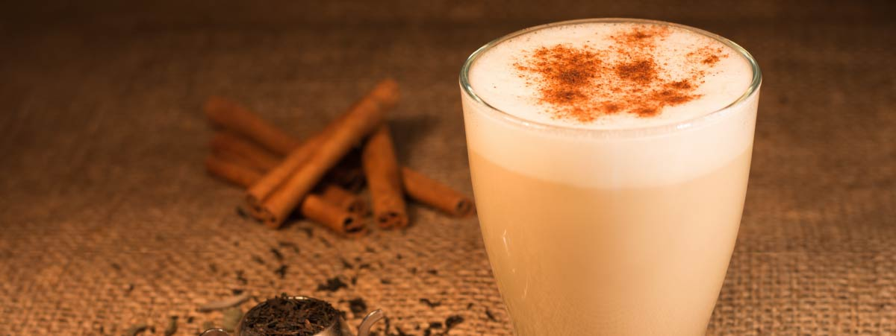
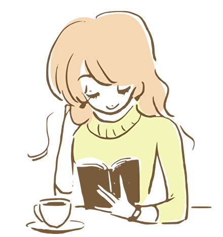

Chai Latte

A chai latte is made by mixing steamed milk with black tea that has been infused with spices.
The drink is then topped with foam. The spices used will vary from café to café; some coffee shops create signature chai blends and keep the ingredients a secret.
Ingredients
- 2 chai tea bags
- 1/2 cup water
- 1 1/2 cup milk
- 2 tablespoons honey
- Cinnamon and nutmeg (for garnish)
Steps
- In a small saucepan, bring water to a boil. Add in tea bag and steep for 7-10 minutes.
- Add in the milk and honey, reducing the heat to medium and warming the milk.
- Using a frother or immersion blender, blend until frothy (optional).
- Transfer to cups and serve topped with a sprinkle of cinnamon and nutmeg on top.
- Your cup is ready now! Enjoy :)
